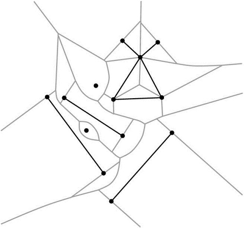
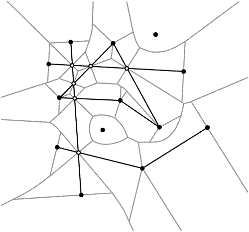

|
CGAL 4.13 - 2D Segment Delaunay Graphs
|
|
CGAL 4.13 - 2D Segment Delaunay Graphs
|
This chapter describes the two-dimensional segment Delaunay graph package of CGAL. We start with a few definitions in Section Definitions. The software design of the 2D segment Delaunay graph package is described in Section Software Design. In Section The Geometric Traits we discuss the geometric traits of the 2D segment Delaunay graph package and in Section The Segment Delaunay Graph Hierarchy the segment Delaunay graph hierarchy, a data structure suitable for fast nearest neighbor queries, is briefly described.

|

|
The 2D segment Delaunay graph package of CGAL is designed to compute the Delaunay graph of a set of possibly intersecting segments on the plane. Although we compute the Delaunay graph, we will often refer to its dual, the segment Voronoi diagram, since it is easier to explain and understand. The algorithm that has been implemented is incremental. The corresponding CGAL class is called Segment_Delaunay_graph_2<SegmentDelaunayGraphTraits_2,SegmentDelaunayGraphStructure_2> and will be discussed in more detail in the sequel. The interested reader may want to refer to the paper by Karavelas [4] for the general idea as well as the details of the algorithm implemented.
Before describing the details of the implementation we make a brief introduction to the theory of segment Delaunay graphs and segment Voronoi diagrams. The segment Voronoi diagram is defined over a set of non-intersecting sites, which can either be points or linear segments, which we assume that are given through their endpoints. The segment Voronoi diagram a subdivision of the plane into connected regions, called cells, associated with the sites. The dual graph of the segment Voronoi diagram is called the segment Delaunay graph. The cell of a site \( t_i\) is the locus of points on the plane that are closer to \( t_i\) than any other site \( t_j\), \( j\neq i\). The distance \( \delta(x, t_i)\) of a point \( x\) in the plane to a site \( t_i\) is defined as the minimum of the Euclidean distances of \( x\) from the points in \( t_i\). Hence, if \( t_i\) is a point \( p_i\), then
\[ \delta(x,t_i)=\|x-t_i\|, \]
whereas if \( t_i\), is a segment, then
\[ \delta(x,t_i)=\min_{y\in t_i}\|x-y\|, \]
where \( \|\cdot\|\) denotes the Euclidean norm. It can easily be seen that it is a generalization of the Voronoi diagram for points.
In many applications the restriction that sites are non-intersecting is too strict. Often we want to allow segments that touch at their endpoints, or even segments that overlap or intersect properly at their interior (for example, see Figure 48.1). Allowing such configurations poses certain problems. More specifically, when we allow segments to touch at their endpoints we may end up with pairs of segments whose bisector is two-dimensional. If we allow pairs of segments that intersect properly at their interior, the interiors of their Voronoi cells are no longer simply connected. In both cases above the resulting Voronoi diagrams are no longer instances of abstract Voronoi diagrams (cf. [5]), which has a direct consequence on the efficient computation of the corresponding Voronoi diagram. The remedy to these problems is to consider linear segments not as one object, but rather as three, namely the two endpoints and the interior. This choice guarantees that all bisectors in the Voronoi diagram are one-dimensional and that all Voronoi cells are simply connected. Moreover, we further distinguish between two cases, according to the type of intersecting pair that our input data set contains. A pair of sites is called weakly intersecting if they have a single common point and this common point does not lie in the interior of any of the two sites. A pair of sites is called strongly intersecting if they intersect and they either have more than one common point or their common point lies in the interior of at least one of the two sites. As it will be seen later the two cases have different representation (and thus storage) requirements, as well as they require a somehow different treatment on how the predicates are evaluated. Having made the distinction between weakly and strongly intersecting sites, and having said that segment sites are treated as three objects, we are now ready to precisely define the Delaunay graph we compute. Given a set \( \mathcal{S}\) of input sites, let \( \mathcal{S}_{\mathcal{A}}\) be the set of points and (open) segments in the arrangement \( \mathcal{A}(\mathcal{S})\) of \( \mathcal{S}\). The 2D segment Delaunay graph package of CGAL computes the (triangulated) Delaunay graph that is dual to the Euclidean Voronoi diagram of the sites in the set \( \mathcal{S}_{\mathcal{A}}\).
The segment Delaunay graph is uniquely defined once we have the segment Voronoi diagram. If the all sites are in general position, then Delaunay graph is a graph with triangular faces away from the convex hull of the set of sites. To unify our approach and handling of the Delaunay graph we add to the set of (finite) sites a fictitious site at infinity, which we call the site at infinity. We can then connect all vertices of the outer face of the Delaunay graph to the site at infinity which gives us a graph with the property that all of its faces are now triangular. However, the Delaunay graph is not a triangulation for two main reasons: we cannot always embed it on the plane with straight line segments that yield a triangulation and, moreover, we may have two faces of the graph that have two edges in common, which is not allowed in a triangulation.
We would like to finish our brief introduction to the theory of segment Delaunay graphs and segment Voronoi diagrams by discussing the concept of general position. We say that a set of sites is in general position if no two triplets of sites have the same tritangent Voronoi circle. This statement is rather technical and it is best understood in the context of points. The equivalent statement for points is that we have no two triplets of points that define the same circumcircle, or equivalently that no four points are co-circular. The statement about general position made above is a direct generalization of the (much simpler to understand) statement about points. On the contrary, when we have sites in degenerate position, the Delaunay graph has faces with more than three edges on their boundary. We can get a triangulated version of the Delaunay graph by simply triangulating the corresponding faces in an arbitrary way. In fact the algorithm that has been implemented in CGAL has the property that it always returns a valid triangulated version of the segment Delaunay graph. By valid we mean that it contains the actual (non-triangulated) Delaunay graph, and whenever there are faces with more than three faces then they are triangulated. The way that they are triangulated depends on the order of insertion of the sites in the diagram.
One final remark has to be made with respect to the difference between the set of input sites and the set of output sites. The set of input sites consists of the closed sites that the user inserts in the diagram. Since segment sites are treated as three objects, internally our algorithm sees only points and open segments. As a result, from the point of view of the algorithm, the input sites have no real meaning. What has real meaning is the set of sites that correspond to cells of the Voronoi diagram and this is the set of output sites.
The dimension of the segment Delaunay graph is in general 2. The exceptions to this rule are as follows:
The 2D segment Delaunay graph class Segment_Delaunay_graph_2<SegmentDelaunayGraphTraits_2,SegmentDelaunayGraphDataStructure_2> follows the design of the triangulation package of CGAL. It is parametrized by two arguments:
SegmentDelaunayGraphDataStructure_2, which in fact is a refinement of the ApolloniusGraphDataStructure_2 concept. The class Triangulation_data_structure_2<Vb,Fb> is a model of the concept SegmentDelaunayGraphDataStructure_2. A default value for the corresponding template parameter is provided, so the user does not need to specify it. As we have mentioned above, the segment Delaunay graph package of CGAL is designed to support the computation of the segment Voronoi diagram even when the input segment sites are intersecting. This choice poses certain issues for the design of the software package. The major concern is the representation of the subsegments that appear in the arrangement of the these sites, because the sites in the arrangement are the ones over which the diagram is actually defined. A direct consequence of the choice of representation is the algebraic degree of the predicates involved in the computation of the segment Delaunay graph, as well as the storage requirements for the subsegments and points on intersection in the arrangement.
The case of weakly intersecting sites does not require any special treatment. We can simply represent points by their coordinates and segments by their endpoints. In the case of strongly intersecting sites, the obvious choice to use the afore-mentioned representation has severe disadvantages. Consider two strongly intersecting segments \( t_i\) and \( t_j\), whose endpoints have homogeneous coordinates of size \( b\). Their intersection point will have homogeneous coordinates of bit size \( 6b+O(1)\). This effect can be cascaded, which implies that after inserting \( k\) (input) segments we can arrive at having points of intersection whose bit sizes are exponential with respect to \( k\), i.e., their homogeneous coordinates will have bit size \( \Omega(2^kb)\). Not only the points of intersection, but also the adjacent subsegments will be represented by quantities of arbitrarily high bit size, and as a result we would not be able to give a bound on the bit sizes of the coordinates of the points of intersection. As a result, we would not be able to give a bound on the memory needed to store these coordinates. An equally important consequence is that we would also not be able to give a bound on the algebraic degree of the algebraic expressions involved in the evaluation of the predicates.
Such a behavior is obviously undesirable. For robustness, efficiency, and scalability purposes, it is critical that the bit size of the algebraic expressions in the predicates does not depend on the input size. For this reason, as well as for others to be discussed below, we decided to represent sites in a implicit manner, which somehow encodes the history of their construction. In particular, we exploit the fact that points of intersection always lie on two input segments, and that segments that are not part of the input are always supported by input segments.
For example, let us consider the configuration in Figure 48.2. We assume that the segments \( t_i=p_iq_i\), \( i=1,2,3\), are inserted in that order. Upon the insertion of \( t_2\), our algorithm will split the segment \( t_1\) into the subsegments \( p_1s_1\) and \( s_1q_1\), then add \( s_1\), and finally insert the subsegments \( p_2s_1\) and \( s_1q_2\). How do we represent the five new sites? \( s_1\) will be represented by its two defining segments \( t_1\) and \( t_2\). The segment \( p_1s_1\) will be represented by two segments, a point, and a Boolean. The first segment is \( t_1\), which is always the segment with the same support as the newly created segment. The second segment is \( t_2\) and the point is \( p_1\). The Boolean indicates whether the first endpoint of \( p_1s_1\) is an input point; in this case the Boolean is equal to true. The segment \( s_1q_1\) will also be represented by two segments, a point, and a Boolean, namely, \( t_1\) (the supporting segment of \( s_1q_1\)), \( t_2\) and false (it is the second endpoint of \( s_1q_1\) that is an input point). Subsegments \( p_2s_1\) and \( s_1q_2\) are represented analogously. Consider now what happens when we insert \( t_3\). The point \( s_2\) will again be represented by two segments, but not \( s_1q_1\) and \( t_3\). In fact, it will be represented by \( t_1\) (the supporting segment of \( s_1q_1\)) and \( t_3\). \( s_2q_1\) will be represented by two segments, a point, and a Boolean ( \( t_1\), \( t_3\), \( q1\) and false), and similarly for \( p_3s_2\) and \( s_2q_3\). On the other hand, both endpoints of \( s_1s_2\) are non-input points. In such a case we represent the segment by three input segments. More precisely, \( s_1s_2\) is represented by the segments \( t_1\) (the supporting segment of \( s_1q_1\)), \( t_2\) (it defines \( s_1\) along with \( t_1\)) and \( t_3\) (it defines \( s_2\) along with \( t_1\)).
true to indicate that the first endpoint in not a point of intersection. The segment \( s_1s_2\) is represented by the six points: \( p_1\), \( q_1\), \( p_2\), \( q_2\), \( p_3\) and \( q_3\). The remaining (non-input) points and segments in the figure are represented similarly. The five different presentations, two for points (coordinates; two input segments) and three for segments (two input points; two input segments, an input point and a Boolean; three input segments), form a closed set of representations and thus represent any point of intersection or subsegment regardless of the number of input segments. Moreover, every point (input or intersection) has homogeneous coordinates of bit size at most \( 3b+O(1)\). The supporting lines of the segments (they are needed in some of the predicates) have coefficients which are always of bit size \( 2b+O(1)\). As a result, the bit size of the expressions involved in our predicates will always be \( O(b)\), independently of the size of the input. The SegmentDelaunayGraphSite_2 concept encapsulates the ideas presented above. A site is represented in this concept by up to four points and a Boolean, or up to six points, depending on its type. The class Segment_Delaunay_graph_site_2<K> implements this concept.
Even this representation, however, has some degree of redundancy. The endpoint of a segment appears in both the representation of the (open) segment site as well as the representation of the point site itself. The situation becomes even worse in the presence of strongly intersecting sites: a point may appear in the representation of multiple subsegments and/or points of intersection. To avoid this redundancy, input points are stored in a container, and the various types of sites (input points and segments, points of intersection, subsegments with one or two points of intersection as endpoints) only store handles to the points in the container. This is achieved by the Segment_Delaunay_graph_storage_site_2<Gt> class which is a model of the corresponding concept: SegmentDelaunayGraphStorageSite_2. This concept enforces a site to be represented by up to 6 handles (which are very lightweight objects) instead of 6 points, which are, compared to handles of course, very heavy objects.
There are applications where we know beforehand that the input consists of only weakly intersecting sites. In these cases the site representation described above poses a significant overhead in the memory requirements of our implementation: instead of representing sites with up to two points (or ultimately with to two handles), we require sites to store six points (respectively, six handles). To avoid this overhead we have introduced two series of traits classes:
Segment_Delaunay_graph_traits_2<K,MTag> and Segment_Delaunay_graph_filtered_traits_2<CK,CM,EK,EM,FK,FM> classes. Segment_Delaunay_graph_traits_without_intersections_2<K,MTag> and Segment_Delaunay_graph_filtered_traits_without_intersections_2<CK,CM,EK,EM,FK,FM> classes. The advantages of having different traits classes are as follows:
The predicates required for the computation of the segment Voronoi diagram are rather complicated. It is not the purpose of this document to discuss them in detail. The interested reader may refer to Burnikel's thesis [2], where it is shown that in the case of weakly intersecting sites represented in homogeneous coordinates of bit size \( b\), the maximum bit size of the algebraic expressions involved in the predicates is \( 40 b+O(1)\). Given our site representation given above we can guarantee that even in the case of strongly intersecting sites, the algebraic degree of the predicates remains \( O(b)\), independently of the size of the input. What we want to focus in the remainder of this section are the different kinds of filtering techniques that we have employed in our implementation.
Our representation of sites is coupled very naturally, with what we call geometric filtering. The technique amounts to performing simple geometric tests exploiting the representation of our data, as well as the geometric structure inherent in our problem, in order to evaluate predicates in seemingly degenerate configurations. Geometric filtering can be seen as a preprocessing step before performing arithmetic filtering. Roughly speaking, by arithmetic filtering we mean that we first try to evaluate the predicates using a fixed-precision floating-point number type (such as double), and at the same time keep error bounds on the numerical errors of the computations we perform. If the numerical errors are too big and do not permit us to evaluate the predicate, we switch to an exact number type, and repeat the evaluation of the predicate. Geometric filtering can help by eliminating situations in which the arithmetic filter will fail, thus decreasing the number of times we need to evaluate a predicate using exact arithmetic.
To illustrate the application and effectiveness of this approach, let us consider a very simple example usage. Suppose we want to determine if two non-input points are identical (we assume here that the input sites are represented by doubles). In order to do that we need to compute their coordinates and compare them. If the two points are identical, the answer to our question using double arithmetic may be wrong (due to numerical errors), in which case we will have to reside to the more expensive exact computation. Instead, before testing the coordinates for equality, we can use the representation of the points to potentially answer the question. More specifically, and this is the geometric filtering part of the computation, we can first test if the defining segments of the two points are the same. If they are not, then we proceed to comparing their coordinates as usual. Testing the defining segments for equality does not involve any arithmetic operations on the input, but rather only comparisons on doubles. By performing this very simple test we avoid a numerically difficult computation, which could be performed thousands of times during the computation of a Delaunay graph.
Geometric filtering has been implemented in all our models of the SegmentDelaunayGraphTraits_2 concept. These models are the classes: Segment_Delaunay_graph_traits_2<K,MTag>, Segment_Delaunay_graph_traits_without_intersections_2<K,MTag>, Segment_Delaunay_graph_filtered_traits_2<CK,CM,EK,EM,FK,FM> and Segment_Delaunay_graph_filtered_traits_without_intersections_2<CK,CM,EK,EM,FK,FM>.
As mentioned above, performing computations with exact arithmetic can be very costly. For this reason we have devoted considerable effort in implementing different kinds of arithmetic filtering mechanisms. Presently, there two ways of performing arithmetic filtering for the predicates involved in the computation of segment Delaunay graphs:
Filtered_exact<CT,ET>. Then this kernel can be entered as the first template parameter in the Segment_Delaunay_graph_2<K,MTag>. CK, FK and EK (default values are provided for most parameters). The first kernel CK is used only for constructions. The second kernel FK is the filtering kernel: the traits class will attempt to compute the predicates using this kernel. If the filtering kernel fails to successfully compute a predicate, the exact kernel EK will be used. These three kernels are then used in the Segment_Delaunay_graph_filtered_traits_2<CK,CM,EK,EM,FK,FM> and Segment_Delaunay_graph_filtered_traits_without_intersections_2<CK,CM,EK,EM,FK,FM> classes, which have been implemented using the Filtered_predicate<EP,FP> mechanism. Our experience so far has shown that for all reasonable and valid values of the template parameters, the second method for arithmetic filtering is more efficient among the two.
Let's consider once more the class Segment_Delaunay_graph_2<K,MTag>. The template parameter MTag provides another degree of freedom to the user, who can indicate the type of arithmetic operations to be used in the evaluation of the predicates. More specifically, MTag can be Field_with_sqrt_tag, in which case the predicates will be evaluated using all four basic arithmetic operations plus square roots; this requires, of course, that the number type used in the kernel K supports these operations exactly. Alternatively MTag can be Field_tag This indicates that we want the predicates to be computed using only the four basic arithmetic operations. Again, for the predicates to be evaluated correctly, the number type used in the kernel K must support the corresponding operations exactly.
The semantics for the template parameters CM, FM and EM in the Segment_Delaunay_graph_filtered_traits_2<CK,CM,EK,EM,FK,FM> and Segment_Delaunay_graph_filtered_traits_without_intersections_2<CK,CM,EK,EM,FK,FM> classes are analogous. With each of these template parameters we can control the type of arithmetic operations that are going to be used in calculations involving each of the corresponding kernels CK, FK and EK. When the Segment_Delaunay_graph_filtered_traits_2<CK,CM,EK,EM,FK,FM> is used the possible values for CM, FM and EM are Field_with_sqrt_tag and Field_tag, whereas if the Segment_Delaunay_graph_filtered_traits_without_intersections_2<CK,CM,EK,EM,FK,FM> class is used, the possible values are Field_with_sqrt_tag and Euclidean_ring_tag.
The Segment_Delaunay_graph_hierarchy_2<SegmentDelaunayGraphTraits_2, SSTag, SegmentDelaunayGraphDataStructure_2> class is the analogue of the Triangulation_hierarchy_2 or the Apollonius_graph_hierarchy_2 classes, applied to the segment Delaunay graph. It consists of a hierarchy of segment Delaunay graphs constructed in a manner analogous to the Delaunay hierarchy by Devillers [3]. Unlike the triangulation hierarchy or the Apollonius graph hierarchy, the situation here is more complicated because of two factors: firstly, segments are treated as three objects instead of one (the two endpoints and the interior of the segments), and secondly, the presence of strongly intersecting sites complicates significantly the way the hierarchy is constructed. The interested reader may refer to the paper by Karavelas [4] for the details of the construction of the hierarchy. Another alternative is to have a hybrid hierarchy that consists of the segment Delaunay graph at the bottom-most level and point Voronoi diagrams at all other levels. This choice seems to work very well in practice , primarily because it avoids the overhead of maintaining a Delaunay graph for segments at the upper levels of the hierarchy. However, it seems much less likely to be possible to give any theoretical guarantees for its performance, in contrast to the hierarchy with segment Delaunay graphs at all levels (cf. [4]). The user can choose between the two types of hierarchies by means of the template parameter SSTag. If SSTag is set to false (which is also the default value), the upper levels of the hierarchy consist of point Delaunay graphs. If SSTag is set to true, we have segment Delaunay graphs at all levels of the hierarchy.
The class Segment_Delaunay_graph_hierarchy_2<SegmentDelaunayGraphTraits_2, SSTag, SegmentDelaunayGraphDataStructure_2> has exactly the same interface and functionality as the Segment_Delaunay_graph_2<SegmentDelaunayGraphTraits_2,SegmentDelaunayGraphDataStructure_2> class. Using the segment Delaunay graph hierarchy involves an additional cost in space and time for maintaining the hierarchy. Our experiments have shown that it usually pays off to use the hierarchy for inputs consisting of more than about 1,000 sites.
The following example shows how to use the segment Delaunay graph traits in conjunction with the Filtered_exact<CT,ET> mechanism. In addition it shows how to use a few of the iterators provided by the Segment_Delaunay_graph_2 class in order to count a few site-related quantities.
File Segment_Delaunay_graph_2/sdg-count-sites.cpp
If you have a rather large input, you better use an insertion function that uses the spatial sorting of your input (end) points. Note that the functions insert_points or insert_segments can be used if your input is only composed of points or segments.
File Segment_Delaunay_graph_2/sdg-fast-sp.cpp
This example shows how to efficiently compute the Delaunay graph of a simple polygon using the spatial sorting to speed up the insertion.
File Segment_Delaunay_graph_2/sdg-fast-sp-polygon.cpp
The following example shows how to use the segment Delaunay graph hierarchy along with the filtered traits class that supports intersecting sites.
File Segment_Delaunay_graph_2/sdg-filtered-traits.cpp
The following example demonstrates how to recover the defining sites for the edges of the Voronoi diagram (which are the duals of the edges of the segment Delaunay graph computed).
File Segment_Delaunay_graph_2/sdg-voronoi-edges.cpp
 1.8.13
1.8.13